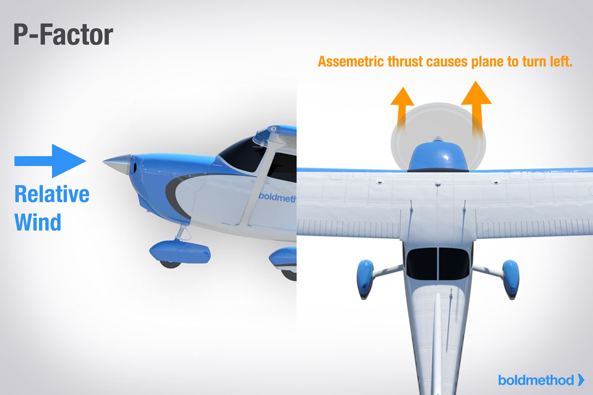

Torque and P-Factor To the pilot, “torque” (the left turning tendency of the airplane) is made up of four elements that cause or produce a twisting or rotating motion around at least one of the airplane’s three axes. These four elements are:

4. Asymmetric loading of the propeller (P-factor)
When an aircraft is flying with a high AOA, the “bite” of
the downward moving blade is greater than the “bite” of the
upward moving blade. This moves the center of thrust to the
right of the prop disc area, causing a yawing moment toward
the left around the vertical axis. Proving this explanation is
complex because it would be necessary to work wind vector
problems on each blade while considering both the AOA of
the aircraft and the AOA of each blade.